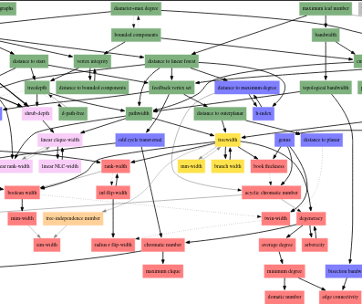
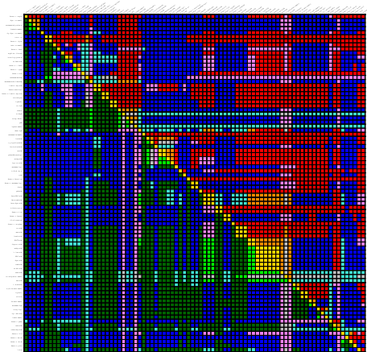
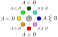

An update to HOPS dropped today. It has one major rework – colorful display of relations – which boils down the known information of a pairwise relation to a single color. See the following examples: left shows relations with respect to treewidth, right shows all pairwise parameter relations.
 
The color scheme works as follows. Consider parameters $A$ and $B$ and let us say $A \le B$ if $A(G) \le f(B(G))$ for some computable function $f$. Then we can generalize this notion to $\ge,<,>,\not\ge,\not\le,=$. Ideally, we aim to know one of the following four results: $A<B$, $A>B$, $A=B$, or $A$ is incomparable to $B$. Each such result comes from two elementary relations, $A \le B$, $A \ge B$, $A \not\le B$, or $A \not\ge B$. Based on how two elementary relations are combined we get a full result – structure of this is circular, which nicely maps to a color wheel.
The idea is to keep final results to the primary colors red, green, and blue (and yellow), while secondary colors show only the elementary results, and represent that the information is not yet known (needs to be added to HOPS). Also note that swapping $A$ with $B$ reflects the color wheel by a horizontal mid-line – this is the reason behind the symmetric comparison table.
The update also comes with small quality of life changes, for example:
- added tags
- added relations and other information to the set page
- updated documentation
- polished the local diagram to show only the more relevant parameters
- replaced PDFs with user-side rendered SVGs (directly from DOTs)
- improved the source formatting
- polished inferences to get $A<B+C$ form $A<B$ and $A<C$
Still, many things can be improved upon. In the next quarter I plan to focus on the following.
- add new pages for pairwise relations that show how the relation is inferred
- export data to a static json API
- create a more complete list of the known results